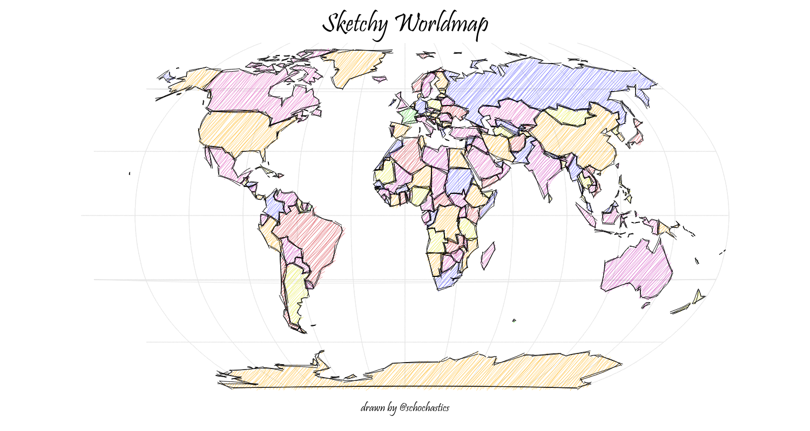
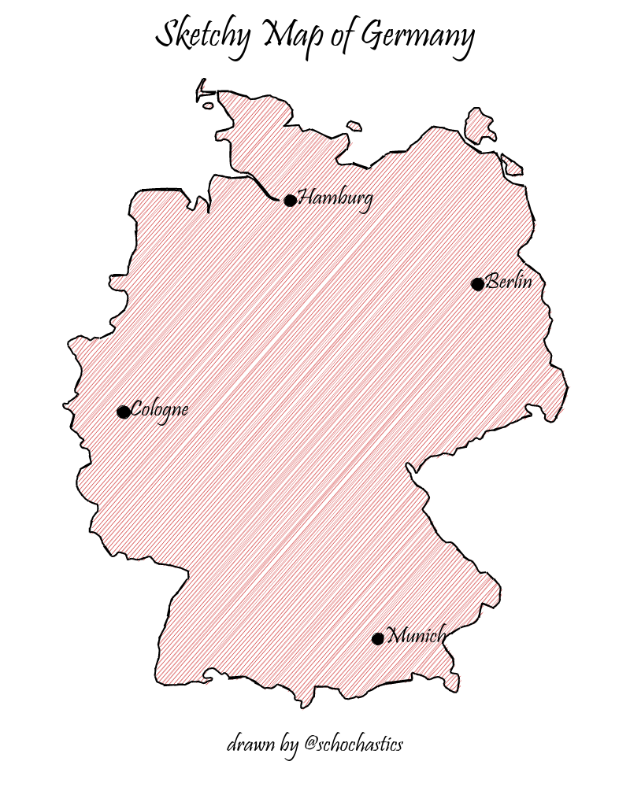

Using the java script library rough.js to draw sketchy, hand-drawn-like maps
(Checkout ggrough for turning general ggplot objects into sketchy drawings and roughnet for networks)

Installation
install.packages("roughsf")You can install the developers version of roughsf with:
# install.packages("remotes")
remotes::install_github("schochastics/roughsf")Usage
roughsf() takes a list of sf objects as input. The layers are drawn in order as they appear in the list. MULTI* geometries are not supported and should be casted beforehand. Aesthetics need to be specified explicitly as columns in the sf objects.
The following attributes are supported for POLYGONS:
- fill fill color
- color stroke color
- stroke stroke size
- fillstyle one of “hachure”, “solid”, “zigzag”, “cross-hatch”, “dots”, “dashed”, “zigzag-line”
- fillweight thickness of fillstyle (between 0 and 1)
- hachureangle angle of hachure lines
- hachuregap gap between two hachure lines
The following attributes are supported for LINESTRINGS:
- color stroke color
- stroke stroke size
The following attributes are supported for POINTS:
- color color of point
- size size of point
- label label to be added (optional)
- label_pos position of label relative to point: (c)enter, (n)orth, (e)ast, (s)outh, (w)est (optional)
Default values are used if one of the attributes is not found.
Values need to be specified explicitly and cannot be inferred from other columns (This needs to be done in a preparatory step)
library(sf)
ger <- rnaturalearth::ne_countries(scale = "medium", country = "Germany", returnclass = "sf")
ger <- st_cast(ger, "POLYGON")
ger$fill <- "#CD2626"
ger$stroke <- 2
ger$fillweight <- 0.5
# MULTIPOLYGON (and also MULTILINESTRING) are not supported
ger <- st_cast(ger, "POLYGON")
cities <- data.frame(name = c("Berlin", "Munich", "Hamburg", "Cologne"))
cities$geometry <- st_sfc(
st_point(c(13.4, 52.5200)), st_point(c(11.582, 48.1351)),
st_point(c(9.9937, 53.5511)), st_point(c(6.9603, 50.9375))
)
cities <- st_sf(cities)
st_crs(cities) <- "+proj=longlat +datum=WGS84 +no_defs +ellps=WGS84 +towgs84=0,0,0"
cities$size <- 15
cities$color <- "#000000"
cities$label <- cities$name
cities$label_pos <- "e"
roughsf::roughsf(list(ger, cities),
title = "Sketchy Map of Germany", caption = "drawn by @schochastics",
title_font = "48px Pristina", font = "30px Pristina", caption_font = "30px Pristina",
roughness = 1, bowing = 1, simplification = 1,
width = 800, height = 1000,
)
Plots can be saved as png with the save_roughsf() function.